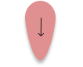
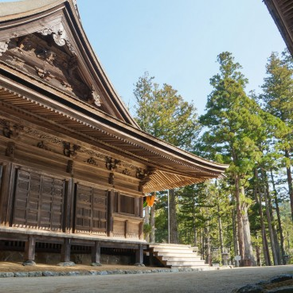
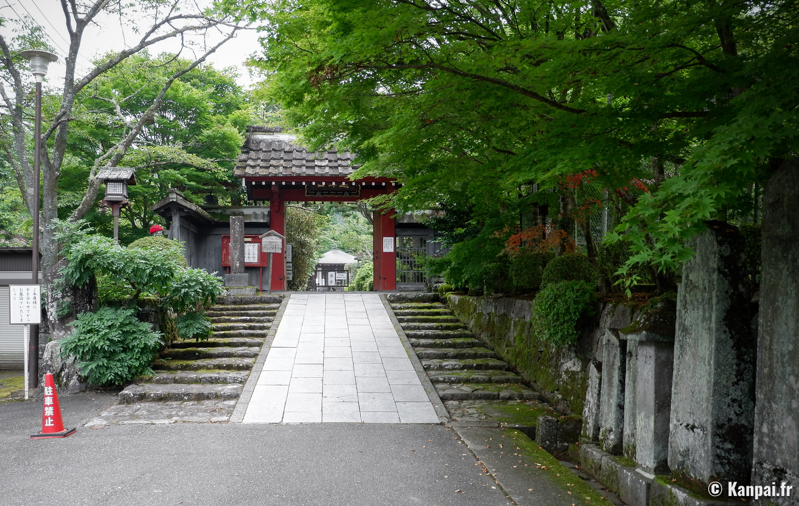
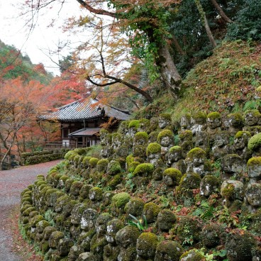
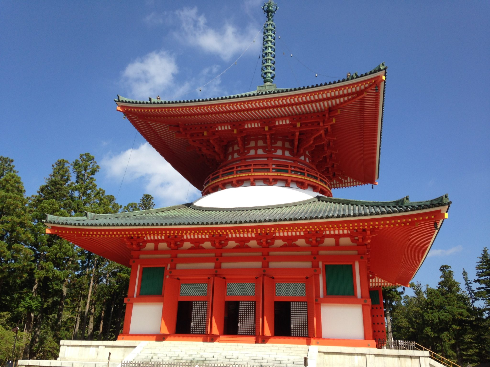
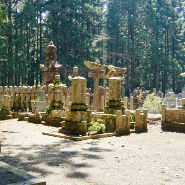

Menu
L'héritage d'Arachné
Merry go round
Les enfants loup
Le jugment et les préavis
Temple de bambou, Kyoto
Un monde vert et plus sain
Contact
Autre projets
Glossaire
A propos
Dicta

Lieux similaires
Voici une présentation de plusieurs lieux qui se rapproche du Temple de Kyoto
    